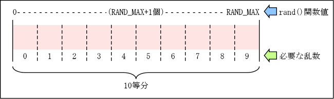
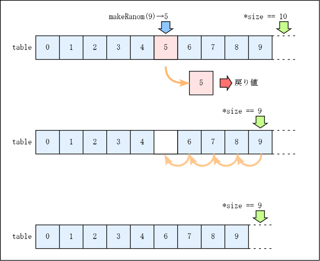

ゲームやシミュレーションのプログラミングでは，サイコロを振るように， 次に何が出るか予測できない「でたらめな数」が必要になることがあります． このような「でたらめな数」のことを「乱数」と呼びます． ところが，ソフトウェアでは本当に予想できない数を作ることが不可能なので （作ることができるということは作り方がわかっているということで， 作り方がわかっているということは当然予測可能）， プログラムで乱数を使う時は，x の単調な変化に対して f(x) が一見無関係に見えるほど複雑に変化し， かつ値域においてその値が一様に分布する， 非常に周期の長い周期関数を用います． このような乱数のことを「疑似乱数」と言います．
C のライブラリ関数には， この疑似乱数を発生する関数が数種類用意されています．
| 疑似乱数の発生 | 種の設定 | 説明 |
|---|---|---|
| int rand(void) | void srand(unsigned int seed) | もっとも基本的な疑似乱数 |
| long int random(void) | void srandom(unsigned int seed) | rand() よりも周期の長い疑似乱数 |
| double drand48(void) | void srand48(long int seed) | 48ビットの精度を持つ疑似乱数 |
ここで rand(), random(), drand48() が疑似乱数を発生させる関数で，srand(), srandom(), srand48() は疑似乱数の「種」を設定する関数です．疑似乱数の「種」については後述します． ここでは rand() を使って説明します．
#include <stdlib.h>
int main(void)
{
int r;
r = rand();
printf("%d\n", r);
return 0;
}
|
上のソースプログラムをコンパイルして，a.out を得たとします． これを実行すると，下のような結果を得ます．
[nachi00@s065000 ~]$ ./a.out 1804289383 [nachi00@s065000 ~]$ ./a.out 1804289383 [nachi00@s065000 ~]$ ./a.out 1804289383 |
このようにこのプログラムは，何回実行しても同じ結果しか得られません． そこで，このプログラムを次のように変更してみます．
#include <stdlib.h>
int main(void)
{
int i;
for (i = 0; i < 5; i++) {
int r;
r = rand();
printf("%d\n", r);
}
return 0;
}
|
上のプログラムは for 分を使って rand() 関数を５回繰り返して呼び出します． これをコンパイルして実行すると，下のような結果を得ます．
[nachi00@s065000 ~]$ ./a.out 1804289383 846930886 1681692777 1714636915 1957747793 [nachi00@s065000 ~]$ ./a.out 1804289383 846930886 1681692777 1714636915 1957747793 [nachi00@s065000 ~]$ ./a.out 1804289383 846930886 1681692777 1714636915 1957747793 |
このように関数 rand() は，プログラム中で繰り返し呼び出せば， そのたびに異なる値を生成しますが， プログラムの実行開始時には， 常に同じ値から生成を開始します． この性質は，シミュレーションなどで計算結果の再現性を維持したい （条件を変えなければ別の日にシミュレーションを行なっても同じ結果を得たい） ときなどには便利です．
しかしゲームなどの場合は毎回同じ動作をすることになるので， ちょっと困ります．そこで，そういう場合には疑似乱数の「種」を変更して， 疑似乱数の値と変化の仕方（疑似乱数の系列）を変更することができます． この疑似乱数の「種」は srand() 関数で指定します．
#include <stdlib.h>
int main(void)
{
int i;
srand(3);
for (i = 0; i < 5; i++) {
int r;
r = rand();
printf("%d\n", r);
}
return 0;
}
|
srand() 関数を用いていない場合は， 「種」の値として 1 が使われます． 上のプログラムでは，これを 3 に変更しています．
[nachi00@s065000 ~]$ ./a.out 1205554746 483147985 844158168 953350440 612121425 [nachi00@s065000 ~]$ ./a.out 1205554746 483147985 844158168 953350440 612121425 [nachi00@s065000 ~]$ ./a.out 1205554746 483147985 844158168 953350440 612121425 |
このように疑似乱数の「種」を変更すれば， 最初に生成される疑似乱数や， そのあとに続けて生成される疑似乱数の値（系列）を， すべて異なるものにできます．
しかし，疑似乱数は同じ「種」に対して同じ「系列」の乱数を生成しますから， プログラムを実行するたびに「種」を変更しないと， やはり毎回同じ動作をするプログラムになってしまいます．
そこで，非常に安直な方法ですが， ここでは「現在時刻」を疑似乱数の「種」に使ってみます． time() 関数は世界標準時 (UTC) の 1970年1月1日0時0分0秒 （この時刻を Unix 時間における the Epoch と呼びます） からの経過秒数を返します．
#include <stdlib.h>
#include <time.h>
int main(void)
{
int i;
time_t t;
t = time(0);
srand(t);
for (i = 0; i < 5; i++) {
int r;
r = rand();
printf("%d\n", r);
}
return 0;
}
|
時間は刻々と変化するので， それを「種」に使えば， プログラムを実行するたびに疑似乱数の「系列」が変わります．
[nachi00@s065000 ~]$ ./a.out 220206450 1290013935 1854602127 1012099451 912099443 [nachi00@s065000 ~]$ ./a.out 1011382875 50552693 1452829348 651454423 1869372132 [nachi00@s065000 ~]$ ./a.out 864341302 1447785131 1903323501 1248780993 224417020 |
ただし，time() 関数は「秒」単位の経過時間を求めるので， プログラムを１秒以内に繰り返して実行すると， 同じ系列の疑似乱数が生成されてしまいます． したがって，この方法は あんまり良い方法だとは言えません．
rand() 関数によって生成される疑似乱数の値は，0 から RAND_MAX の間の整数値です，ここで RAND_MAX はヘッダファイル stdlib.h の中で定義されている記号定数です．したがって， 例えば疑似乱数として「0～9の整数値」を得たい場合は， この値をスケーリングする必要があります．

得たい疑似乱数が「0～9の整数値」であれば， 0, 1, ... , 9 の10種類の値が等しい頻度で生成される必要があります． rand() 関数は 0～RAND_MAX の間にある RAND_MAX + 1 種類の整数を均等に発生しますから， これを10等分して0～9に割り当てます．
くれぐれも rand() % 10 ということはしないで下さい． これによって得られる疑似乱数の周期は非常に短いものになります．
ただし，なお，RAND_MAX は通常 int 型で表すことができる整数の最大値になっているので， 「RAND_MAX + 1」をすると桁溢れ（オーバーフロー）してしまいます． それを避けるためには，この計算を実数型 （精度も必要なので double 型）で行なう必要があります．
rand() 関数をもとにして，0 から int 型の引数 max までの範囲内の整数をランダムに発生する関数 makeRandom(max) を実装し， このプログラムを完成させなさい．
このプログラムは makeRandom() を使って 0～9 間の整数値をランダムに 10,000,000 個発生させ，それぞれの発生頻度を調べるものです． このプログラムを実行して， 0～9 の整数が均等に発生していることを確かめなさい．
[nachi00@s065000 ~]$ ./dis1-0701 0: 10.01% 1: 9.99% 2: 10.00% 3: 9.99% 4: 9.99% 5: 10.01% 6: 9.99% 7: 10.01% 8: 9.99% 9: 10.01% |
乱数を複数個発生した時，その中に同じ値が 2 個以上含まれることがあります． たとえば，問題7-1で実装した関数 makeRandom() を用いて 0～9 の整数の乱数を 5 個発生した場合，3, 0, 2, 4, 2 というように 2 が 2 回以上発生するといったことが起こります．
これだと，ビンゴゲームのように同じ数が複数回現れてはならない場合に困ります． そこで，発生すべき値をあらかじめ配列に入れておき， どの要素の値を取り出すべきかを乱数で決定するようにします． そして取り出した値の入っていた要素のところを「詰める」ようにします．
関数 extractNumber(int table[], int *size) は，*size 個のデータが格納されている int 型の配列 table の一つの要素をランダムに選びだし，その値を戻り値として返すとともに， その値が入っていた要素のところを詰め，*size から 1 を減じます． この関数を実装し， このプログラムを完成させなさい．

また，このプログラムを実行して，同じ数が 2 回以上現れないことを確かめなさい．sort は標準入力を並べ替えて標準出力に出力するコマンドです．
[nachi00@s065000 ~]$ ./dis1-0702 10 9 13 11 12 14 7 18 16 4 15 8 3 0 1 5 19 17 6 2 [nachi00@s065000 ~]$ ./dis1-0702 | sort -n 0 1 2 3 4 5 6 7 8 9 10 11 12 13 14 15 16 17 18 19 |
同じ数字を二つ以上含まない n 桁 (n ≦ 10) の数字だけからなる文字列を作り， char 型の配列引数 string に格納する関数 makeNumber(char *string, int n) を実装し， このプログラムを完成させなさい．
[nachi00@s065000 ~]$ ./dis1-0703 9710382564 [nachi00@s065000 ~]$ ./dis1-0703 3796158042 [nachi00@s065000 ~]$ ./dis1-0703 1682549307 |
二つの数字だけからなる同じ長さの文字列 s1 と s2 を比較し， 次の数を求める関数 compare(char *s1, char *s2, int *hit, int *blow) を実装して， このプログラムを完成させなさい．
以下に例を示します．
- 714 と 375
- どの桁も一致していないが，ともに 7 を含むので *hit = 0, *blow = 1．
- 174 と 375
- ともに 2 桁目が 7 だが，他に一致する文字がないので *hit = 1, *blow = 0．
- 574 と 375
- ともに 2 桁目が 7 で，ともに 5 を含むので *hit = 1, *blow = 1．
- 573 と 375
- ともに 2 桁目が 7 で，ともに 5 と 3 を含むので *hit = 1, *blow = 2．
なお，文字列の長さは 10 文字以下とし，それぞれ同じ数字を二つ以上含まないものとします． このプログラムを実行して，上記の数が正しく求められることを確かめなさい．
[nachi00@s065000 ~]$ ./dis1-0704 s1=62510, s2=61759 -> *hit=1, *blow=2 [nachi00@s065000 ~]$ ./dis1-0704 s1=27401, s2=93872 -> *hit=0, *blow=2 [nachi00@s065000 ~]$ ./dis1-0704 s1=95078, s2=85904 -> *hit=1, *blow=3 |
「ヒットアンドブロー (Hit and Blow)」は， 相手（この場合はコンピュータ）が考えている数を当てるゲームです． ゲームをする人の解答の中に正解に含まれている数字が含まれていれば「ブロー」， さらにその数字が同じ桁のところにあれば「ヒット」とします． 相手はゲームをする人の解答に対して，「ヒット」と「ブロー」の数を答えます． 「ヒット」数が正解の文字数と一致していれば，解答は正解です． なお，正解は同じ数字を二つ以上含んでいません．
このようなゲームを作るために，キーボードから解答を入力する関数 getNumber(char string[], int length) を実装しなさい．この関数は length に正解の文字数を与えて呼び出され， string に入力された解答を格納します． 入力された解答が以下の条件を満たさない場合は， 再度入力を求めるようにして下さい．
また，入力を終了（Ctrl-D をタイプ）した時には， 戻り値を非0，上の条件を満たす入力を得た時には，戻り値を0として下さい．
以上の仕様を満たす関数 getNumber() を実装し， このプログラムを完成させなさい． また，このプログラムを実行して，期待通りゲームができることを確かめなさい．
[nachi00@s065000 ~]$ ./dis1-0705 私が考えている 3 桁の数字を当てて下さい． 12 数字が短過ぎます．3 文字入れて下さい． 1234 数字が長過ぎます．3 文字入れて下さい． 12a a は数字ではありません． 123 hit=0, blow=2 234 hit=1, blow=0 231 hit=2, blow=0 235 hit=1, blow=0 631 hit=2, blow=0 731 hit=2, blow=0 831 正解！ |